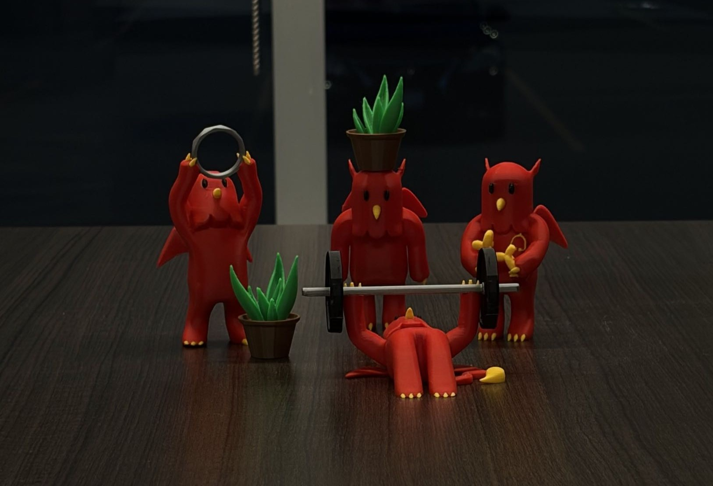

case study / 01
Using creativity to fundraise for the team.
Designed and lead the development of 3D printed toys (inspired by Simiski) to fundraise for the robotics team. All fundraising money goes to supporting students in attending competition.

- role
- Designer and Lead
- timeline
- 1.5 Years
- tools
- Collaboration · Design · Marketing
- status
- Complete (for me)
Overview
Introducing Lil Gryphie
After running a few bake sales, and seeing other clubs do the same, I wanted a robotics-special fundraiser that would create excitement on campus.
A Lil Gryphie is a 3D-printed gotcha box or blind box toy I designed to fundraise for my robotics team. All the money made goes to financially supporting students in attending competition. I want the team to feel accessible to everyone, so fundraising and sponsorships are among our top priorities. Alongside being excited about the successful fundraiser, I’ve been having a lot of fun optimizing our development, toy creation, and packaging processes.
the question“Write the central question or challenge in one memorable sentence.”
Process
How I approached it
-
01
Understand
Describe the research, requirements, references, or initial diagnosis.
-
02
Build and test
Explain what you made and how you checked whether it worked.
-
03
Iterate
Show what changed after evidence, feedback, or failure.
Outcome
What came out of it
State the result clearly. If the project was exploratory, the result can be a finding, a working prototype, or a better model of the problem.
Reflection
What I would do differently
Be specific about one limitation, mistake, or trade-off. A good reflection shows judgment, not self-punishment.
End by explaining the next experiment, skill, or decision this project shaped.
Technical notes / methodology
Put implementation details, parameters, references, or caveats here so interested readers can go deeper without interrupting the main story.